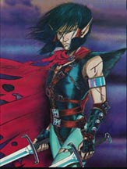

ROCKSEER

Rockseers are a race of renegade elves who lives underworld in rock caves.
They are inherently intelligent but have neglected intellectualstudies
and become very translucent from years of generations of trying to pass
rocks. Like elves, rockseers have infravision and can walk innocent and
can pass doors easily.Rockseers must stay neutral to cast any spells they
might know. And because of their organism they are vulnerable to woods.
They have a specific spell called 'meld into stone'.
The base exp for Rockseers:
Witch = 1500 Cleric = 1500 Thief = 1500 Warrior = 1500
Warlock = 1700 Ranger = 1700 Ninja = 1800